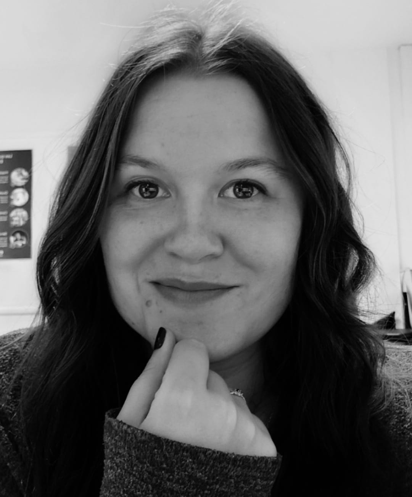

Qui suis-je ?
Je suis Marine, chargée de communication spécialisée en stratégie interne, création visuelle et gestion d’événements corporate. Passionnée par la construction de récits qui engagent, je mets mon expertise au service d'entreprises qui souhaitent fédérer leurs équipes et donner de la résonance à leur image de marque.
Mon Parcours
Forte d’un Master en communication digitale et d'expériences significatives dans le secteur industriel (notamment chez EuroAPI), j’ai développé une réelle agilité pour piloter des projets complexes et multi-sites. De la conception graphique de supports print (journaux internes, livrets d'accueil) au déploiement de campagnes digitales, j’ai l’habitude de collaborer avec des directions RH pour transformer des enjeux stratégiques en messages clairs et impactants pour les collaborateurs.
Ma vision et mes valeurs
Ma démarche repose sur trois piliers essentiels : la créativité, l’éthique et l’impact. Je suis convaincue qu’une communication réussie naît de l’équilibre entre une identité visuelle forte et un engagement sincère, notamment sur les sujets de RSE et de diversité. Mon objectif : créer des supports authentiques qui renforcent le sentiment d’appartenance.
Ce qui m'inspire
Graphiste dans l'âme, j'aime explorer les outils de création (Suite Adobe, Canva) pour offrir une expérience visuelle moderne, élégante et structurée. Toujours en veille sur les nouvelles tendances, je cherche à allier ma maîtrise technique à une vision humaine et conviviale de la communication d'entreprise.